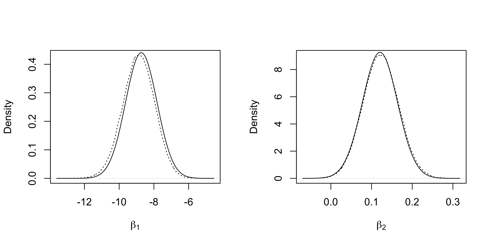

Computational Statistics II
Laplace approximation, Variational Bayes, Expectation Propagation
In this unit we discuss several approximate Bayesian methods that have been presented in the slides of unit D.2. We will make use of the Pima indian dataset again, as in the previous Markdown document B.1 and Markdown document B.2. Importantly, note that in this document we will not standardize the predictors to make the computational problem more challenging.
The Pima indian dataset
We will employ a relatively vague prior centered at 0, namely \beta \sim N(0, 100 I_p).
The gold standard: MCMC
In order to assess the accuracy of the approximations, we first obtain a large number of posterior samples using the Pólya-gamma data augmentation approach. This is the same code that is reported also in the last paragraph of the Markdown document B.2.
library(BayesLogit)
logit_Gibbs <- function(R, burn_in, y, X, B, b) {
p <- ncol(X)
n <- nrow(X)
out <- matrix(0, R, p) # Initialize an empty matrix to store the values
P <- solve(B) # Prior precision matrix
Pb <- P %*% b # Term appearing in the Gibbs sampling
Xy <- crossprod(X, y - 1 / 2)
# Initialization
beta <- rep(0, p)
# Iterative procedure
for (r in 1:(R + burn_in)) {
# Sampling the Pólya-gamma latent variables
eta <- c(X %*% beta)
omega <- rpg.devroye(num = n, h = 1, z = eta)
# Sampling beta
eig <- eigen(crossprod(X * sqrt(omega)) + P, symmetric = TRUE)
Sigma <- crossprod(t(eig$vectors) / sqrt(eig$values))
mu <- Sigma %*% (Xy + Pb)
A1 <- t(eig$vectors) / sqrt(eig$values)
beta <- mu + c(matrix(rnorm(1 * p), 1, p) %*% A1)
# Store the values after the burn-in period
if (r > burn_in) {
out[r - burn_in, ] <- beta
}
}
out
}Laplace approximation
The first approach considered is the Laplace approximation. Note that the MAP is obtained using the Pólya-gamma data-augmentation, therefore ensuring a monotonic procedure. Refer to the slides of unit D.2 for further details.
logit_Laplace <- function(y, X, B, b, tol = 1e-16, maxiter = 10000) {
P <- solve(B) # Prior precision matrix
Pb <- P %*% b # Term appearing in the Gibbs sampling
logpost <- numeric(maxiter)
Xy <- crossprod(X, y - 0.5)
# Initialization
beta <- solve(crossprod(X / 4, X) + P, Xy + Pb)
eta <- c(X %*% beta)
w <- tanh(eta / 2) / (2 * eta)
w[is.nan(w)] <- 0.25
# First value of the likelihood
logpost[1] <- sum(y * eta - log(1 + exp(eta))) - 0.5 * t(beta) %*% P %*% beta
# Iterative procedure
for (t in 2:maxiter) {
beta <- solve(qr(crossprod(X * w, X) + P), Xy + Pb)
eta <- c(X %*% beta)
w <- tanh(eta / 2) / (2 * eta)
w[is.nan(w)] <- 0.25
logpost[t] <- sum(y * eta - log(1 + exp(eta))) - 0.5 * t(beta) %*% P %*% beta
if (logpost[t] - logpost[t - 1] < tol) {
prob <- plogis(eta)
return(list(
mu = c(beta), Sigma = solve(crossprod(X * prob * (1 - prob), X) + P),
Convergence = cbind(Iteration = (1:t) - 1, logpost = logpost[1:t])
))
}
}
stop("The algorithm has not reached convergence")
}The marginal densities of the first two regression coefficients are reported, together with the “gold standard” obtained from the MCMC samples.
library(tictoc)
tic()
fit_Laplace <- logit_Laplace(y, X, B, b)
toc()
## 0.023 sec elapsed
par(mfrow = c(1, 2))
plot(density(fit_MCMC[, 1]), xlab = expression(beta[1]), lty = "dotted", main = "")
curve(dnorm(x, fit_Laplace$mu[1], sqrt(fit_Laplace$Sigma[1, 1])), add = T)
plot(density(fit_MCMC[, 2]), xlab = expression(beta[2]), lty = "dotted", main = "")
curve(dnorm(x, fit_Laplace$mu[2], sqrt(fit_Laplace$Sigma[2, 2])), add = T)
Variational Bayes
The second approximation is the Variational Bayes approximation of Jaakkola and Jordan (2000) and later considered also by Durante and Rigon (2019).
# Compute the log-determinant of a matrix
ldet <- function(X) {
if (!is.matrix(X)) {
return(log(X))
}
determinant(X, logarithm = TRUE)$modulus
}
logit_CAVI <- function(y, X, B, b, tol = 1e-16, maxiter = 10000) {
lowerbound <- numeric(maxiter)
p <- ncol(X)
n <- nrow(X)
P <- solve(B)
Pb <- c(P %*% b)
Pdet <- ldet(P)
# Initialization for omega equal to 0.25
P_vb <- crossprod(X * rep(1 / 4, n), X) + P
Sigma_vb <- solve(P_vb)
mu_vb <- Sigma_vb %*% (crossprod(X, y - 0.5) + Pb)
eta <- c(X %*% mu_vb)
xi <- sqrt(eta^2 + rowSums(X %*% Sigma_vb * X))
omega <- tanh(xi / 2) / (2 * xi)
omega[is.nan(omega)] <- 0.25
lowerbound[1] <- 0.5 * p + 0.5 * ldet(Sigma_vb) + 0.5 * Pdet - 0.5 * t(mu_vb - b) %*% P %*% (mu_vb - b) + sum((y - 0.5) * eta + log(plogis(xi)) - 0.5 * xi) - 0.5 * sum(diag(P %*% Sigma_vb))
# Iterative procedure
for (t in 2:maxiter) {
P_vb <- crossprod(X * omega, X) + P
Sigma_vb <- solve(P_vb)
mu_vb <- Sigma_vb %*% (crossprod(X, y - 0.5) + Pb)
# Update of xi
eta <- c(X %*% mu_vb)
xi <- sqrt(eta^2 + rowSums(X %*% Sigma_vb * X))
omega <- tanh(xi / 2) / (2 * xi)
omega[is.nan(omega)] <- 0.25
lowerbound[t] <- 0.5 * p + 0.5 * ldet(Sigma_vb) + 0.5 * Pdet - 0.5 * t(mu_vb - b) %*% P %*% (mu_vb - b) + sum((y - 0.5) * eta + log(plogis(xi)) - 0.5 * xi) - 0.5 * sum(diag(P %*% Sigma_vb))
if (abs(lowerbound[t] - lowerbound[t - 1]) < tol) {
return(list(
mu = c(mu_vb), Sigma = matrix(Sigma_vb, p, p),
Convergence = cbind(
Iteration = (1:t) - 1,
Lowerbound = lowerbound[1:t]
), xi = xi
))
}
}
stop("The algorithm has not reached convergence")
}The marginal densities of the first two regression coefficients are reported, together with the “gold standard” obtained from the MCMC samples.
tic()
fit_CAVI <- logit_CAVI(y, X, B, b)
toc()
## 0.027 sec elapsed
par(mfrow = c(1, 2))
plot(density(fit_MCMC[, 1]), xlab = expression(beta[1]), lty = "dotted", main = "", ylim = c(0, 0.6))
curve(dnorm(x, fit_CAVI$mu[1], sqrt(fit_CAVI$Sigma[1, 1])), add = T)
plot(density(fit_MCMC[, 2]), xlab = expression(beta[2]), lty = "dotted", main = "", ylim = c(0, 12))
curve(dnorm(x, fit_CAVI$mu[2], sqrt(fit_CAVI$Sigma[2, 2])), add = T)Hybrid Laplace
THe fourth approach is based on the variational Bayes approximation mean estimate which is plugged-in into the Fisher information matrix. This procedure is described in the slides of unit D.2.
The marginal densities of the first two regression coefficients are reported, together with the “gold standard” obtained from the MCMC samples.
fit_HL <- logit_HL(y, X, B, b)
par(mfrow = c(1, 2))
plot(density(fit_MCMC[, 1]), xlab = expression(beta[1]), lty = "dotted", main = "")
curve(dnorm(x, fit_HL$mu[1], sqrt(fit_HL$Sigma[1, 1])), add = T)
plot(density(fit_MCMC[, 2]), xlab = expression(beta[2]), lty = "dotted", main = "")
curve(dnorm(x, fit_HL$mu[2], sqrt(fit_HL$Sigma[2, 2])), add = T)Further comparisons
In the following, we report the posterior means and variances under the all the previous approximations together with the gold standard MCMC values.
Mean and variances
mu_MCMC <- colMeans(fit_MCMC)
Sigma_MCMC <- var(fit_MCMC)
Means <- data.frame(
MCMC = mu_MCMC,
Laplace = fit_Laplace$mu,
VB = fit_CAVI$mu,
HL = fit_HL$mu
)
knitr::kable(Means, digits = 4)| MCMC | Laplace | VB | HL |
|---|---|---|---|
| -8.8879 | -8.7249 | -8.7894 | -8.7894 |
| 0.1230 | 0.1207 | 0.1215 | 0.1215 |
| 0.0345 | 0.0338 | 0.0341 | 0.0341 |
| -0.0113 | -0.0110 | -0.0111 | -0.0111 |
| 0.0080 | 0.0076 | 0.0078 | 0.0078 |
| 0.0753 | 0.0741 | 0.0745 | 0.0745 |
| 1.2411 | 1.2159 | 1.2282 | 1.2282 |
| 0.0249 | 0.0245 | 0.0247 | 0.0247 |
Sd <- data.frame(
MCMC = sqrt(diag(var(fit_MCMC))),
Laplace = sqrt(diag(fit_Laplace$Sigma)),
VB = sqrt(diag(fit_CAVI$Sigma)),
HL = sqrt(diag(fit_HL$Sigma))
)
knitr::kable(Sd, digits = 4, row.names = F)| MCMC | Laplace | VB | HL |
|---|---|---|---|
| 0.9199 | 0.9049 | 0.6979 | 0.9086 |
| 0.0434 | 0.0430 | 0.0374 | 0.0431 |
| 0.0042 | 0.0041 | 0.0034 | 0.0041 |
| 0.0102 | 0.0101 | 0.0087 | 0.0101 |
| 0.0146 | 0.0145 | 0.0122 | 0.0145 |
| 0.0228 | 0.0225 | 0.0191 | 0.0226 |
| 0.3574 | 0.3522 | 0.2904 | 0.3533 |
| 0.0139 | 0.0138 | 0.0122 | 0.0138 |
Discrepancy from the optimal Gaussian
In the last table, we comput the Kullback-Leibler divergence between the obtained Gaussian approximations and the “optimal” Gaussian distribution, which is the one matching the correct posterior mean and variance. These quantities are approximated using MCMC.
KL_gauss <- function(mu1, Sigma1, mu2, Sigma2) {
p <- ncol(Sigma1)
c(0.5 * (ldet(Sigma2) - ldet(Sigma1) - p + sum(diag(solve(Sigma2) %*% Sigma1)) + t(mu2 - mu1) %*% solve(Sigma2) %*% (mu2 - mu1)))
}
library(expm)
dWass_gauss <- function(mu1, Sigma1, mu2, Sigma2) {
Sigma2_r <- sqrtm(Sigma2)
c(crossprod(mu2 - mu1) + sum(diag(Sigma1 + Sigma2 - 2 * sqrtm(Sigma2_r %*% Sigma1 %*% Sigma2_r))))
}tab <- data.frame(
Type = c("Laplace", "Variational Bayes", "Hybrid Laplace"),
KL = c(
KL_gauss(fit_Laplace$mu, fit_Laplace$Sigma, mu_MCMC, Sigma_MCMC),
KL_gauss(fit_CAVI$mu, fit_CAVI$Sigma, mu_MCMC, Sigma_MCMC),
KL_gauss(fit_HL$mu, fit_HL$Sigma, mu_MCMC, Sigma_MCMC)
),
Wasserstein = c(
dWass_gauss(mu_MCMC, Sigma_MCMC, fit_Laplace$mu, fit_Laplace$Sigma),
dWass_gauss(mu_MCMC, Sigma_MCMC, fit_CAVI$mu, fit_CAVI$Sigma),
dWass_gauss(mu_MCMC, Sigma_MCMC, fit_HL$mu, fit_HL$Sigma)
)
)
knitr::kable(tab, digits = 4)| Type | KL | Wasserstein |
|---|---|---|
| Laplace | 0.0290 | 0.0275 |
| Variational Bayes | 0.2753 | 0.0647 |
| Hybrid Laplace | 0.0110 | 0.0100 |